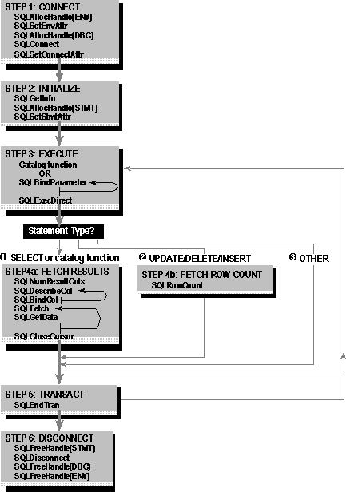

This chapter describes the general flow of ODBC applications. It is unlikely that any application calls all of these functions in exactly this order. However, most applications use some variation of these steps. The basic application steps are shown in the following igure.

Basic application steps